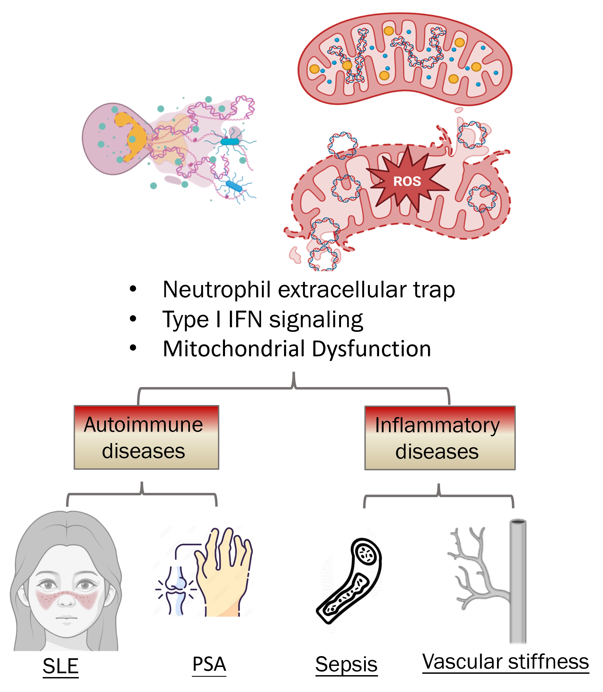

嗜中性白血球參與發炎性疾病的機轉與角色
Neutrophils are the most abundant leukocyte population in the circulation and play a critical role in immune surveillance through pathogen phagocytosis and the formation of neutrophil extracellular traps (NETs). While NETs are essential for controlling microbial infections, a variety of endogenous stimuli—including immune complexes, advanced glycation end products (AGEs), and damage-associated molecular pattern (DAMP) molecules—can also induce NET formation. Aberrant NET release triggered by these self-derived signals has been implicated in the pathogenesis of several inflammatory diseases, such as systemic lupus erythematosus (SLE), rheumatoid arthritis, cardiovascular disorders, and age-related inflammation. These stimuli can disrupt mitochondrial homeostasis, leading to the release of mitochondrial reactive oxygen species (ROS) and mitochondrial DNA (mtDNA), which further propagate inflammatory responses and contribute to metabolic dysregulation and cellular dysfunction. Our research utilizes multiple experimental platforms to investigate how DAMP-induced metabolic reprogramming, mitochondrial dysregulation, and NET formation in neutrophils contribute to the development and progression of inflammatory diseases.
